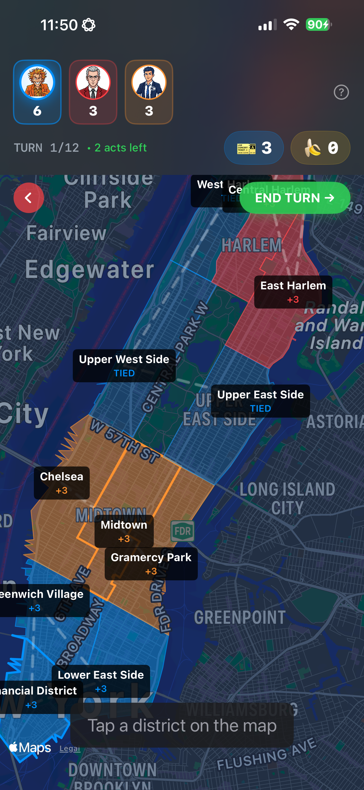
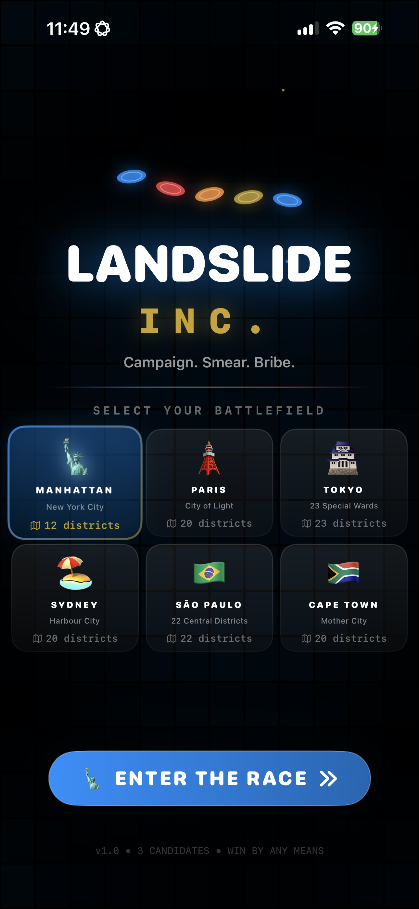
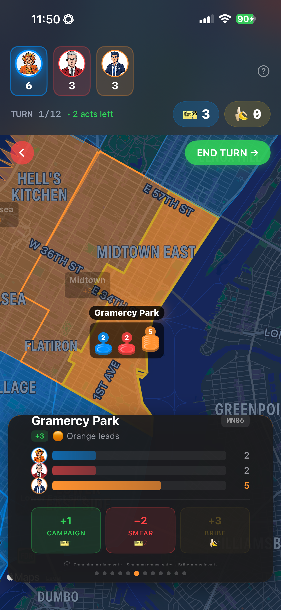
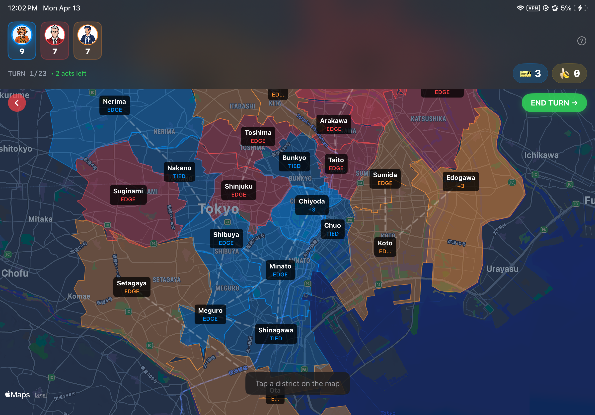
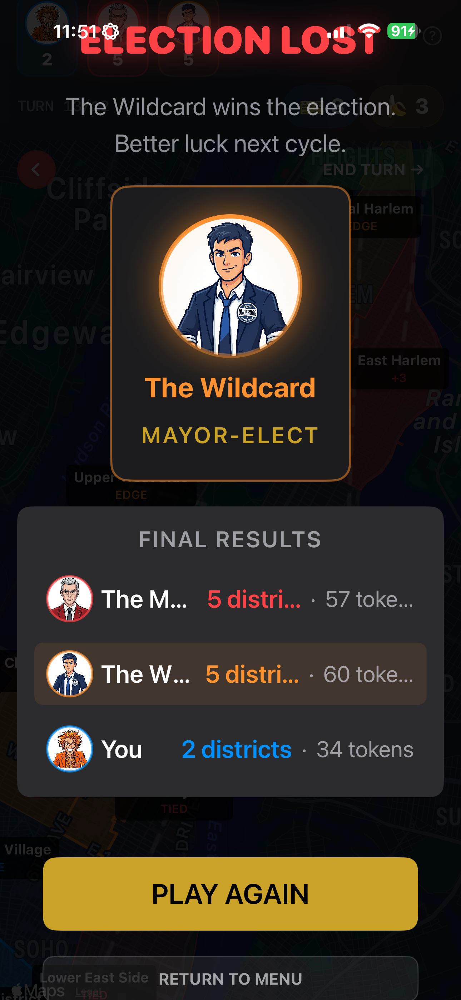

Political strategy · iOS
Every district.
Every dirty trick.
Campaign, smear and bribe your way to city hall. Outsmart two rivals on real city maps, one district at a time.

Six real cities
Manhattan, Paris, Tokyo, Sydney, São Paulo and Cape Town. Every map changes the race.
Three dirty tactics
Rally supporters, run a smear campaign or spend a banana to buy loyalty.
Two unpredictable rivals
Read The Machine. Adapt to The Wildcard. Find your own path to a majority.
One more election
Random political events can turn the board around when you least expect it.
Campaign guide




Frequently Asked Questions
How do I play?
Choose a city, then compete against AI opponents to win the most districts. Each turn you get a set of actions to spend — place votes, sabotage opponents, or buy influence. The candidate who controls the majority of districts wins the election.
What are the three actions?
Campaign — Place your votes in a district to build support.
Smear — Remove an opponent's votes from a district.
Bribe — Spend bananas to buy votes and swing a district in your favor.
How do I win?
Win the majority of districts on the map. Control more territory than your opponents by the end of all turns, and you'll be elected.
What cities are available?
Manhattan, Paris, Tokyo, Sydney, São Paulo, and Cape Town — each with unique districts and map layouts.
Does the game require internet?
No. Landslide Inc. is fully playable offline. Anonymous analytics data is sent when a connection becomes available, but gameplay is not affected.
How do I reset the tutorial?
Delete and reinstall the app. This will reset all local data, including the tutorial.
Need Help?
If you have questions, bug reports, or feedback, reach out:
Your campaign starts here.
Explore Landslide Inc. on the App Store.